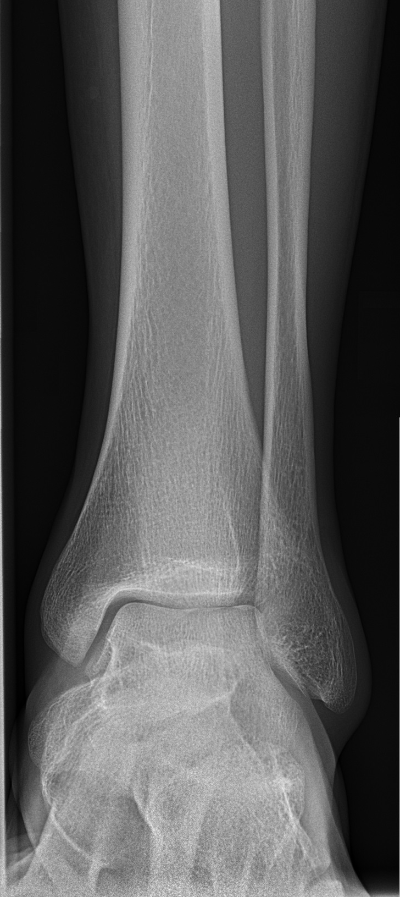
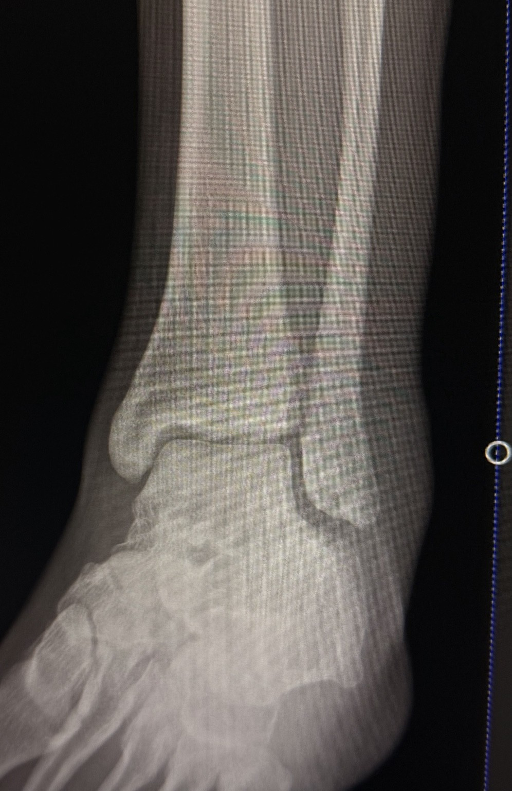
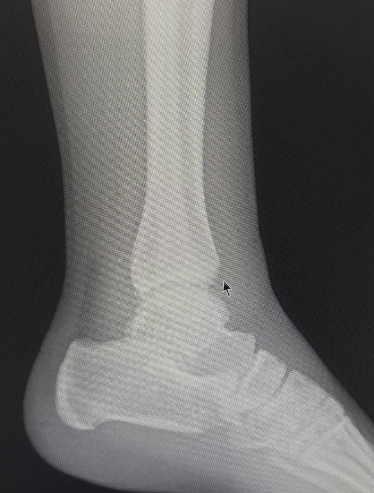

RADPOCKET
Emergency Radiography · v1.4
🔎 Ankle reference & teaching module
🦴 Ankle X-ray
Quick View
Standard ankle series: AP, mortise and lateral, according to local protocol and clinical indication.
Core checks
- Correct patient and side.
- Required anatomy included.
- Positioning appropriate for the projection.
- Exposure and sharpness adequate.
- Systematically assess bones, mortise, alignment and soft tissues.
Common indications
- Acute trauma, pain or swelling.
- Suspected fracture or dislocation.
- Follow-up when requested.
🖼️ Positioning visuals
Original schematics: simplified educational diagrams showing patient/detector/CR relationships.
AP: ankle supported, minimise unwanted rotation, centre to ankle joint.
Mortise: commonly taught around 15–20° internal rotation, but follow local protocol and do not force trauma.
Lateral: affected side closest, true lateral as tolerated, include distal tibia/fibula and relevant adjacent anatomy.
AP ankle

Your anonymised AP radiograph • Tap to zoom
Positioning
- Supine or seated with leg supported.
- Foot/ankle in AP position as tolerated; avoid unnecessary rotation.
- Centre to the ankle joint according to local protocol.
Image criteria
- Distal tibia/fibula and ankle joint included.
- Malleoli and talus demonstrated.
- Minimal unwanted rotation and motion.
Mortise — your radiograph

Anonymised teaching radiograph • Tap image to zoom
Projection: AP mortise view. Common teaching position uses approximately 15–20° internal rotation of the leg/foot to open the ankle mortise; follow local protocol and never force rotation in acute trauma.
Positioning
- Patient supine or seated with the affected leg supported.
- Align the ankle so the detector is centred to the joint.
- Internally rotate the entire leg/foot as required by local protocol, commonly around 15–20°.
- Keep the foot relaxed and avoid unnecessary plantarflexion/dorsiflexion.
- Centre to the ankle joint and collimate to include the distal tibia/fibula and ankle joint.
Image criteria
- Medial and lateral malleoli demonstrated.
- Tibial plafond and talar dome clearly seen.
- Medial, lateral and superior joint spaces assessable.
- Distal tibiofibular relationship demonstrated.
- Minimal unwanted rotation or motion.
What to assess
MortiseOverall congruity and symmetry.
Talar alignmentLook for displacement or tilt.
MalleoliTrace each cortex for fracture.
SyndesmosisAssess distal tibiofibular relationship in context.
Teaching habit: trace the tibial plafond → medial malleolus → talus → lateral malleolus → distal fibula before moving on.
Common errors: insufficient rotation, excessive rotation, poor centring, inadequate collimation, or forcing a painful ankle into position.
Lateral — your radiograph

Anonymised teaching radiograph • Tap image to zoom
Projection: lateral ankle. Aim for a true lateral as patient condition allows; follow local trauma protocol where positioning must be modified.
Positioning
- Affected side closest to the detector.
- Leg supported and knee/ankle positioned for a true lateral as tolerated.
- Avoid unwanted rotation; do not force a painful or unstable injury.
- Centre to the ankle joint.
- Collimate to include distal tibia/fibula, talus and relevant adjacent anatomy.
Image criteria
- Talar domes should be closely superimposed for a true lateral.
- Distal tibia and fibula included.
- Ankle joint and talus demonstrated.
- Calcaneus and relevant adjacent anatomy included.
- Sharp cortical and trabecular detail with minimal motion.
What to assess
AlignmentTibiotalar relationship and overall alignment.
Posterior malleolusInspect carefully on the lateral.
TalusCheck dome, body and visible neck.
Soft tissuesLook for swelling, effusion or other clues.
Teaching habit: trace the distal tibia → posterior malleolar region → talus → calcaneus, then review the soft tissues.
Common errors: obliquity, non-superimposed talar domes, inadequate coverage, motion and excessive plantarflexion/dorsiflexion.
🚨 Trauma
Safety first: don't force a painful or unstable ankle into routine positioning.
- Check mechanism, pain, deformity and immobilisation.
- Maintain clinically required immobilisation.
- Adapt positioning to patient tolerance and local trauma protocol.
- Consider associated foot or proximal fibular injury when clinically indicated.
- Escalate/add imaging according to local pathway.
👀 Image evaluation
Coverage → Position → Exposure → Anatomy → Pathology
- Correct side and marker.
- Required distal tibia/fibula, talus and ankle joint included.
- Mortise appropriately demonstrated.
- Sharp cortical/trabecular detail.
- Assess alignment and joint spaces.
- Review soft tissues and visible adjacent anatomy.
Systematic search
- Distal tibia and plafond.
- Fibula and lateral malleolus.
- Talus.
- Mortise/alignment.
- Visible foot and lower leg.
- Soft tissues.
🦴 Anatomy
Tibial plafondDistal tibial articular surface.
Medial malleolusDistal tibial projection.
Lateral malleolusDistal fibular projection.
TalusForms the inferior ankle joint component.
Assess the ankle as a relationship: tibial plafond + talus + malleoli + distal tibiofibular joint.
📋 Ottawa Ankle Rules
Clinical decision aid: follow current local/NHS protocol and apply only when appropriate.
- Posterior edge/inferior tip tenderness of the lateral malleolus.
- Posterior edge/inferior tip tenderness of the medial malleolus.
- Inability to bear weight both immediately after injury and in assessment, commonly assessed as four steps.
For children, age and clinical circumstances matter; follow current paediatric guidance and local policy.
🩻 Teach — Interactive ankle radiographs
Interactive teaching: tap an X-ray or use the buttons to cycle Original → Labels → Assessment. The original radiograph is never altered.
AP view
Original
Distal tibia
Fibula
Medial malleolus
Lateral malleolus
Talar dome
Talus
Assessment: coverage • rotation • distal tibia/fibula • malleoli • talar alignment • joint space • soft tissues.
Tap the image to move to the next teaching state.
Mortise view
Original
Distal tibia
Fibula
Medial malleolus
Lateral malleolus
Talar dome
Talus
Tibiotalar joint
Assessment: mortise congruity • medial clear space • lateral joint space • talar alignment • distal tibiofibular relationship • malleolar cortices.
Tap the image to move to the next teaching state.
Lateral view
Original
Distal tibia
Distal fibula
Tibiotalar joint
Talar dome
Talus
Calcaneus
Assessment: true lateral/rotation • distal tibia and fibula relationship • tibiotalar alignment • talar dome • posterior malleolar region • subtalar region • calcaneus • soft tissues.
Tap the image to move to the next teaching state.
Label accuracy: on the lateral view the distal fibula is partly superimposed by the tibia. The labels are intentionally placed on the reliable bone regions rather than guessing at a separate lateral malleolus outline.
🦴 Anatomy — Lateral ankle

Distal tibiaForms the tibial plafond and the medial side of the ankle mortise.
Distal fibulaForms the lateral malleolus and contributes to lateral ankle stability.
Tibiotalar jointThe main ankle articulation between the tibia and talus.
Talar domeThe superior articular surface of the talus.
TalusLies between the distal tibia/fibula and the calcaneus.
CalcaneusThe largest tarsal bone and the main heel bone.
Subtalar jointArticulation between the talus and calcaneus, important for hindfoot motion.
Medial and lateral malleoliDistal projections of the tibia and fibula that form the ankle mortise.
Learning sequence: identify the bones first, then the joints, then assess alignment and cortical continuity on the radiograph.
Teaching checklist
RADPOCKET method: Coverage → Position → Exposure → Anatomy → Alignment → Pathology → Soft tissues.
Label accuracy note: labels have been limited to structures that can be identified reliably on the supplied projections. The lateral view deliberately avoids uncertain foot labels rather than guessing.
Important: educational reference only. Follow current departmental protocols, scope of practice and clinical governance.
RADPOCKET v1.4
Educational reference only. Follow current departmental protocols, clinical governance and professional judgement.
Educational reference only. Follow current departmental protocols, clinical governance and professional judgement.